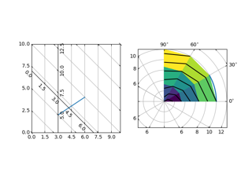
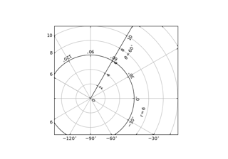
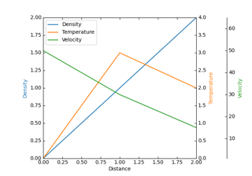
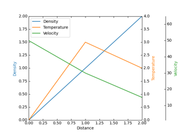
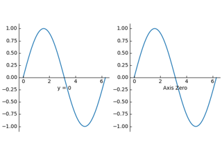
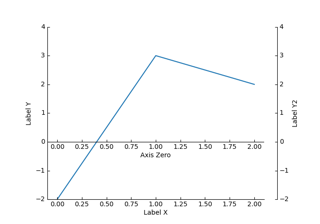
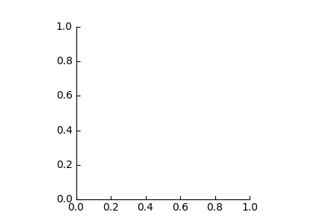

Module - axisartist# Axis Direction Axis Direction axis_direction demo axis_direction demo Axis line styles Axis line styles  Curvilinear grid demo Curvilinear grid demo Demo CurveLinear Grid2 Demo CurveLinear Grid2 floating_axes features floating_axes features  floating_axis demo floating_axis demo  Parasite Axes demo Parasite Axes demo  Parasite axis demo Parasite axis demo Ticklabel alignment Ticklabel alignment Ticklabel direction Ticklabel direction Simple axis direction Simple axis direction Simple axis tick label and tick directions Simple axis tick label and tick directions Simple Axis Pad Simple Axis Pad  Custom spines with axisartist Custom spines with axisartist  Simple Axisline Simple Axisline  Simple Axisline3 Simple Axisline3